SOULGRAIN / ONWARD — INDEPENDENT CHAPTER STUDY
马蹄袖 → 鞋舌 · 动画 V1
19 秒连续叙事：手进入、捏起抬平、摊掌、同一袖面翻转、抽手、响指、水晶布面变化、返回整鞋视角。银钻在手登场时已经存在，响指只改变布面。结束定格；倒放使用独立按钮。
完整动作审片
24 fps 固定时间步逐帧捕捉真实 WebGL 场景，H.264 编码；用于看动作连续性，不代表设备实时帧率。实验室本身为真实三维交互，不播放这个视频冒充动画。
真实浏览器操作录屏
实际点击播放、独立倒放、拖查时间轴、自由旋转和恢复导演机位。录制环境为 Linux Chromium / SwiftShader 软件渲染，可能比真实 GPU 慢。尚未完成 iPad Safari 实机检查。
关键阶段
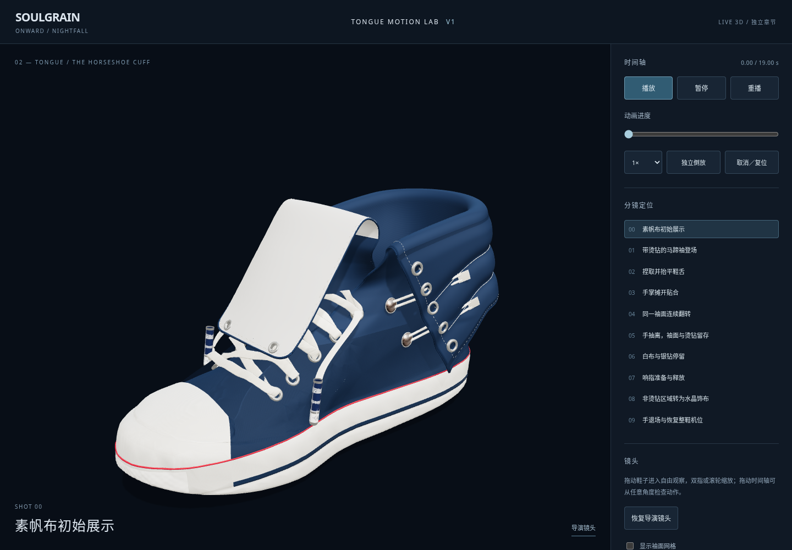
00 · 初始素帆布，已清理的原鞋舌无钻无水晶。
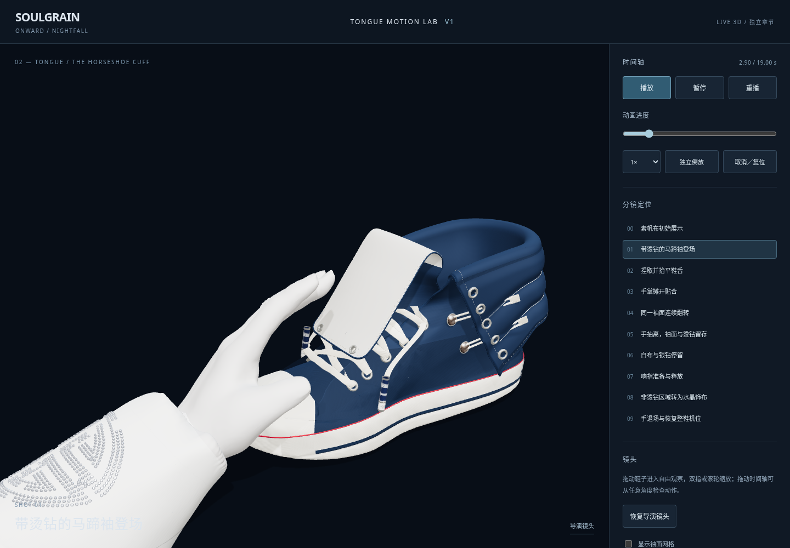
01 · 手与袍袖入场，银钻已在马蹄袖上。
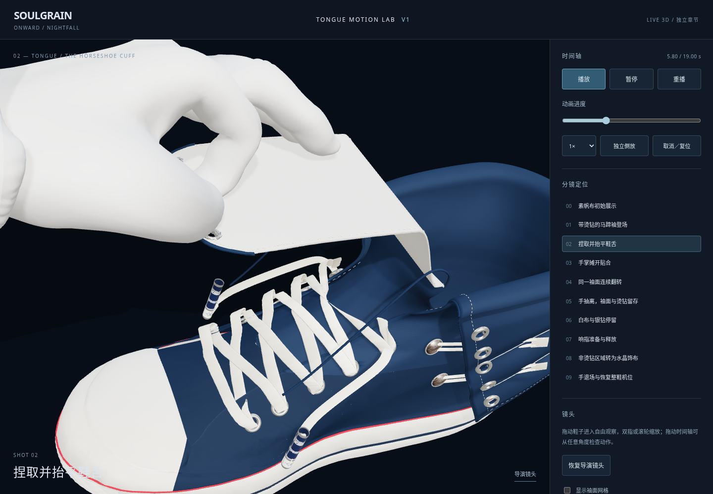
02 · 拇指、食指夹住真实鞋舌表面锚点并抬平。
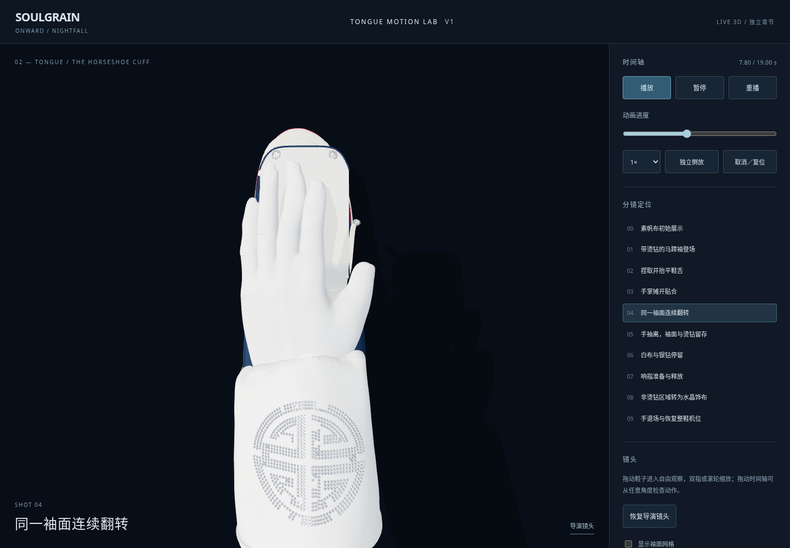
03 · 俯视，鞋头朝上，手掌依次展开。
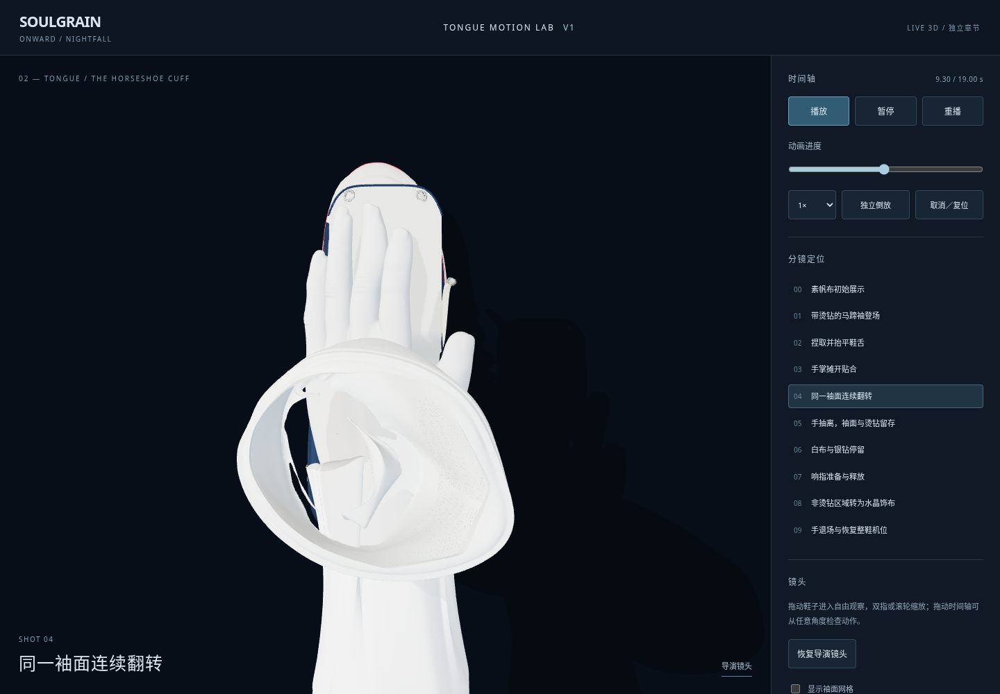
04 · 同一网格连续翻覆，银钻随表面三角形运动。
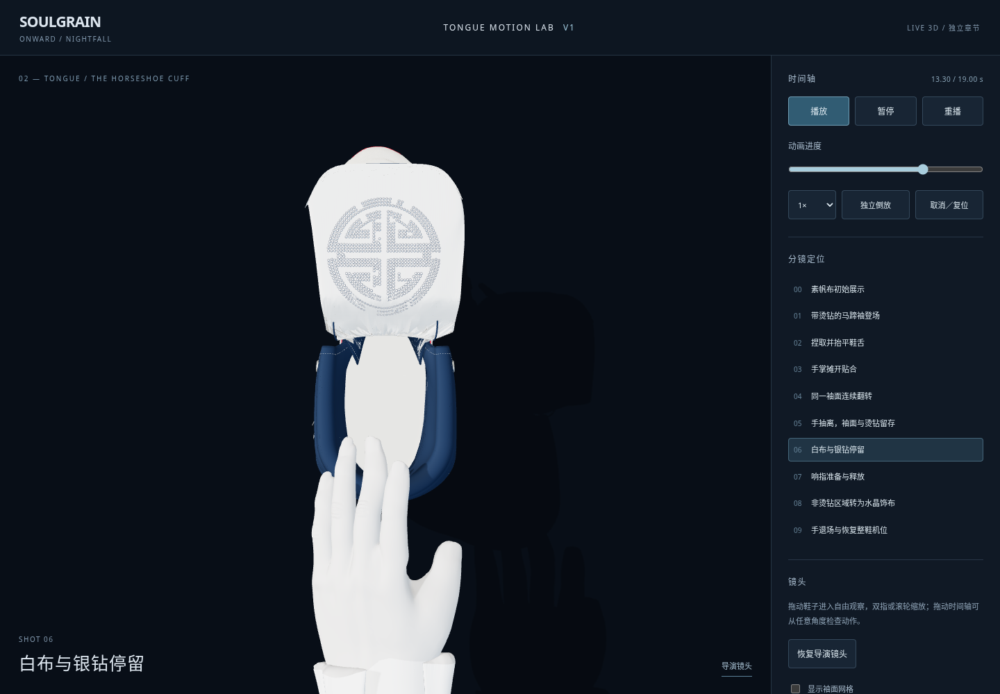
05 · 手抽离、袍袖保留在手臂，白布与银钻留在鞋舌。
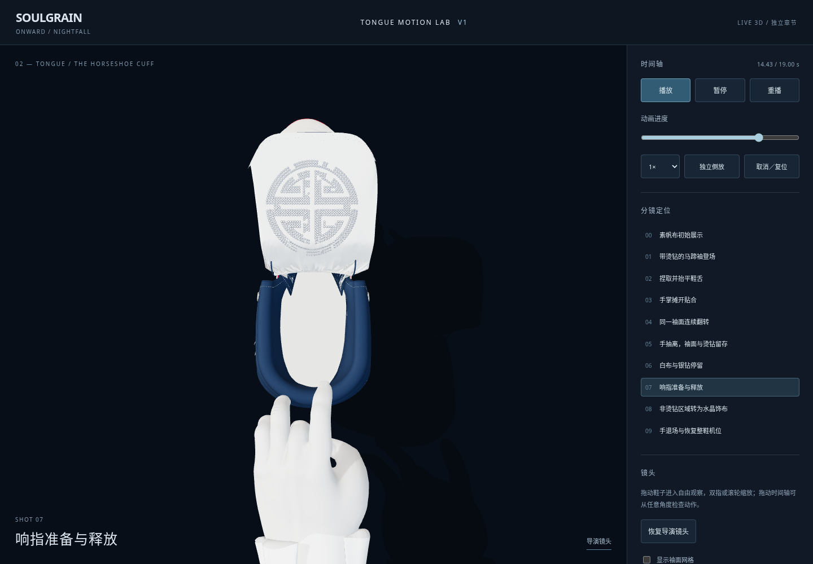
07 · 拇指、中指响指；14.5 秒前无水晶布。
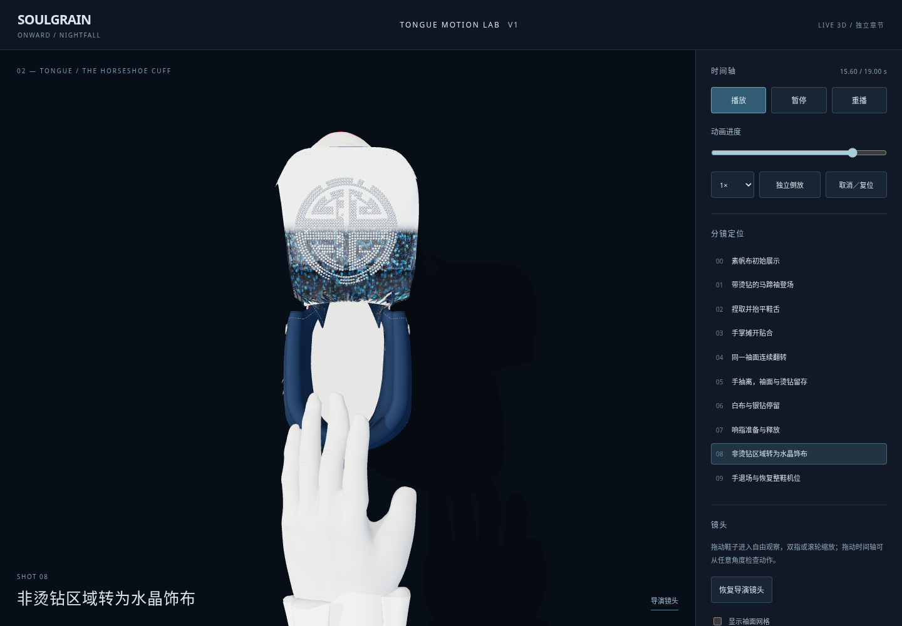
08 · 材质前沿纵向推进，银钻保持不变。
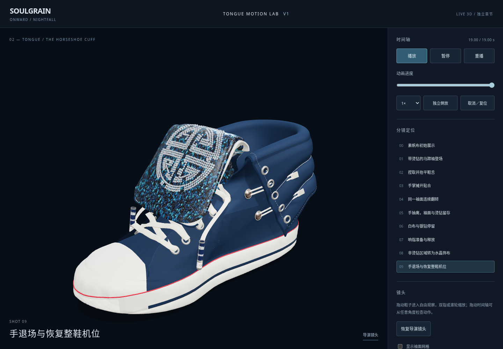
09 · 布面贴回整鞋，手退场并保持终态。
同姿态检查：只变布面
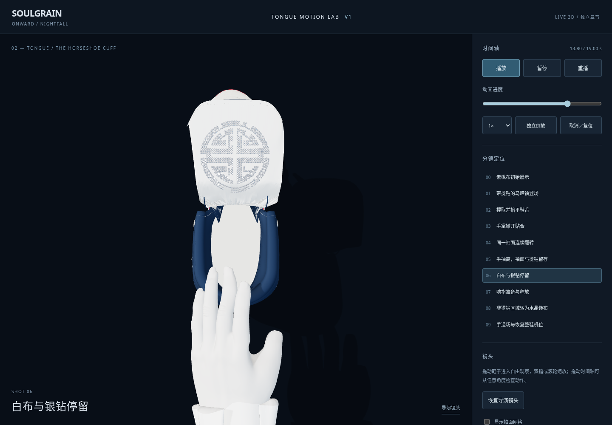
13.8 s · 银钻在白布上。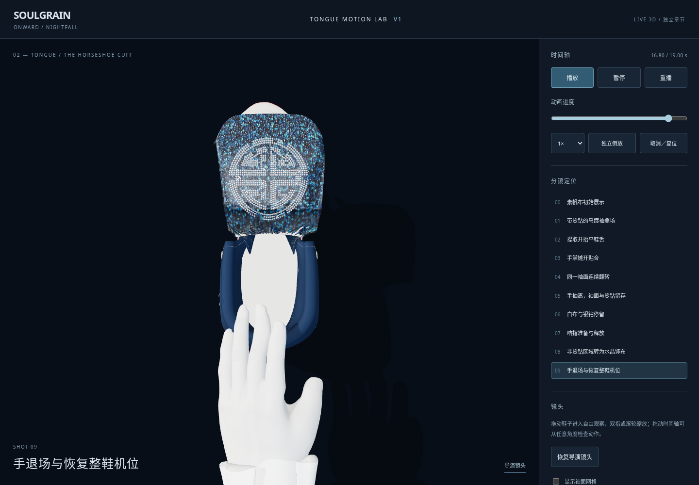
16.8 s · 同一套银钻，布面变为蓝色晶体材质。此对比使用相同袖面姿态，785 个银钻实例矩阵逐项完全一致。几何、实例身份、图案与银钻材质没有在响指时被替换。
本轮仍需艺术审核
- 袖口滚翻的褶皱、边缘收口及鞋舌根部仍有拉伸与细小边界瑕疵，需要继续修饰；原鞋舌基面与覆袖后的轮廓尚未在所有姿态统一到最终裁片。
- 手使用用户模型的派生骨骼；关节弯曲、抓取体积和响指力度仍有可见人工感。
- 蓝色微晶纹理是独立制作的 PBR 近似，颜色层次、晶体密度与银钻反光还需对照最终图打磨。
- 数值检查覆盖指定锚点与采样阶段，不等于全表面、全时间连续碰撞证明，也不是实时布料模拟。
独立实验页面。未修改原 GLB、原贴图、既有广告与后跟动画，未推送或部署正式网站。